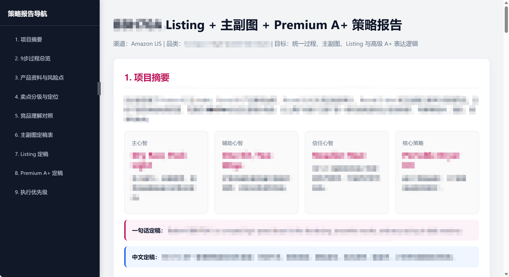
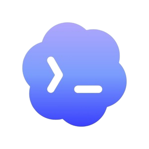

我问 ChatGPT ：
"你觉得我是个什么样的人？"
它的回答是：
有点敏感，有点较真，
也有点强迫自己进化。
哈哈我好像也很认同。
但很容易在一些小地方想很多。
本科读翻译的时候，我会纠结一句话准不准、顺不顺。后来在学校勤工俭学组织里，参与过一家校内实体的经营，又发现很多事情不是想清楚就够了，还要让别人愿意理解和配合。
所以现在做内容时，我还是会经常回到一个很简单的问题：
测出来是 INTJ，我觉得有点准。
我可能不是反应最快的人，但会尽量冷静一点，先别急着下结论。
主副图 / A+ / Brand Story / 英文文案 / UGC Brief
把产品卖点，变成用户能看懂的理由。
Shopify / 首页 / PDP / Banner / 品牌故事
从"单张图讲清楚"，到"一个网站建立信任"。
品牌定位 / TVC / 脚本 / 镜头 / 情绪 / 画面文案
品牌感很多时候藏在细节里。
爬脚本 / 提字幕 / 总结案例 / 改英文 / 纠偏
AI 不替我判断，但会帮我发现哪里还没想清楚。
拆视频脚本、提字幕、总结文章，把一堆散的信息先整理成结构。
让它站在用户、设计师、老板、反对者的角度问我问题，有时候能把我没想清楚的地方问出来。
辅助文描、独立站页面、红人建联话术、英文表达优化。先给我一个版本，我再判断哪里能用、哪里不对。
AI 不一定懂我在做什么，但它很适合陪我把一件事先聊开。


AI 帮我打造了第一个工作流
我希望未来，AI 不只是一个提效工具。
它更像一个和我一起探索的搭子：帮我打开思路，看到更多可能性，也把我从重复和低效里解放出来。
我更希望和 AI 一起： 找到更适合自己的工作方式， 也找到更多生活的意义。
那我希望它的百宝袋里，不只有工具，
也有勇气、好奇心，和通往新世界的任意门。